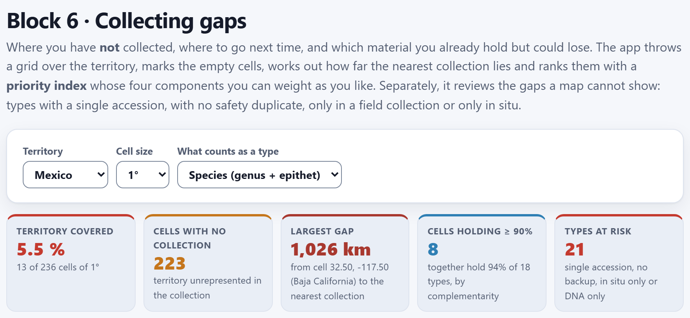
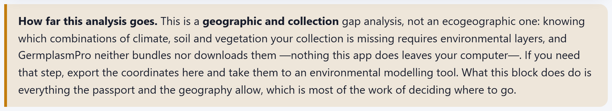
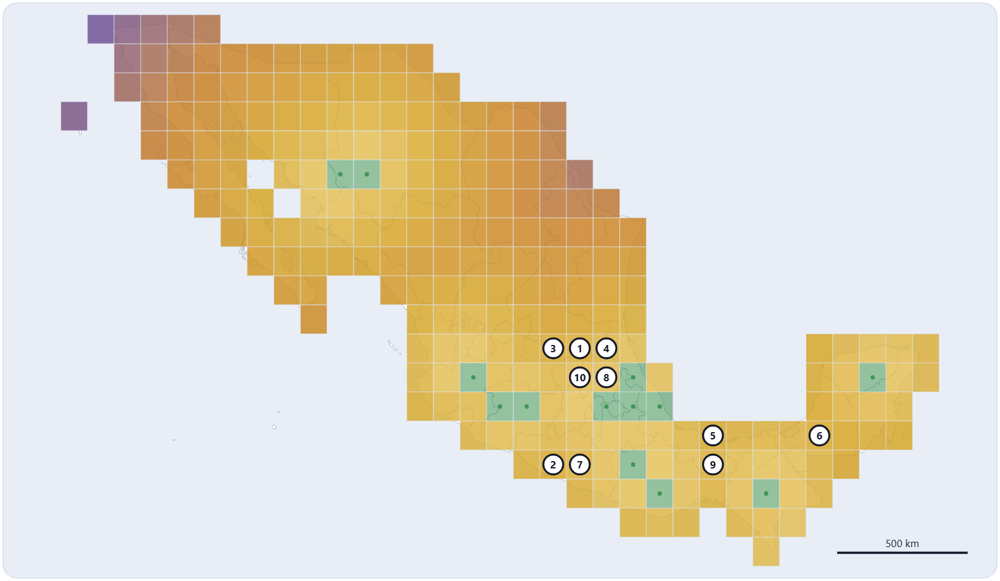
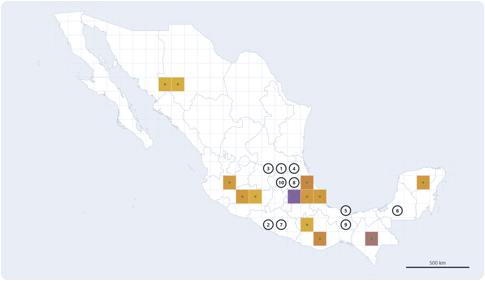
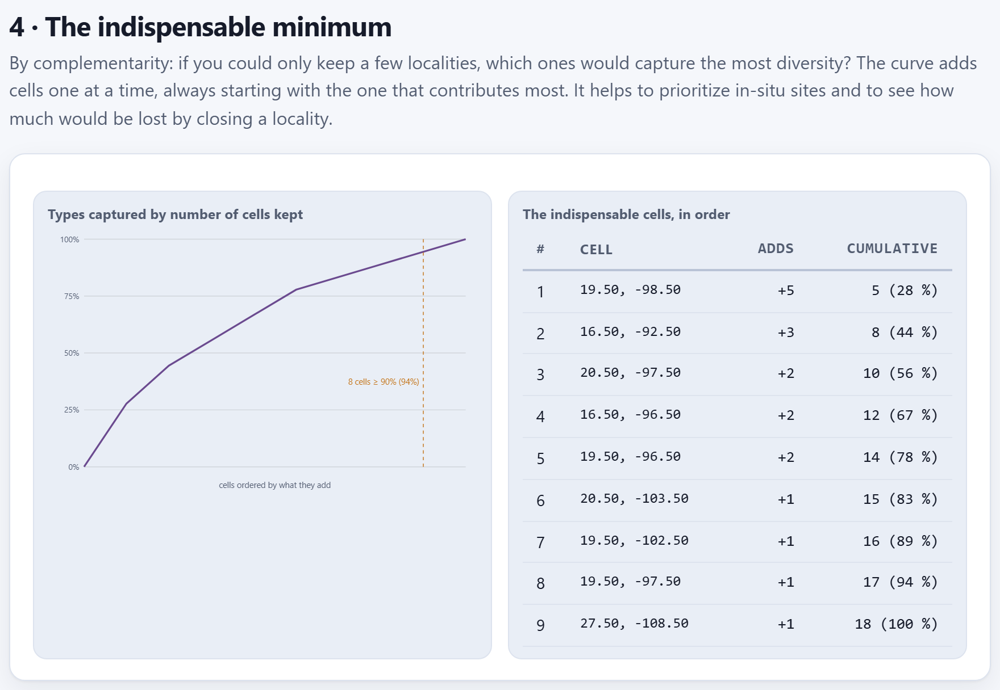

Collecting gaps
Block 5 measured what the collection holds; Block 6 looks at what it lacks. It throws a grid over the territory, marks the cells without any collection and ranks them with a priority index whose four components you can see and weight as you like, so that the next field trip goes where it pays off most. Separately, it reviews the gaps a map does not show—types with a single accession, without a safety duplicate, only in a field genebank, only in situ or only as DNA—and looks for the smallest set of localities that brings together all the diversity. Everything comes from the passport and from geography: it is a geographic and collection gap analysis, not an ecogeographic one.
- 6.1The territory, the grid and the block summary
- 6.2The map of what is missing
- 6.3The priority index, component by component
- 6.4Moving the weights: what you are after on the next trip
- 6.5The collecting route for the GPS
- 6.6What you already have and could lose
- 6.7The indispensable minimum: complementarity
- 6.8How everything changes with the cell, the territory and the type
6.1The territory, the grid and the block summary
A collecting gap is a part of the territory, or of a crop’s diversity, that the collection does not hold. Block 6 looks for them with what is already in the passport (Chapter 2): the coordinates, the species, the conservation route and the safety duplicate. When you open it, or when you change any selector, it recomputes everything behind the animated wait Searching for collecting gaps. If there are no accessions, the block says Load your accessions in Block 2 first.

Three selectors govern the analysis; the other controls are inside each section.
| Selector | Options and what they do |
|---|---|
| Territory | Mexico: the grid keeps the cells that touch the land of some state. The world: those that touch the land of some country, between 60° south and 84° north; the deficit in the index is then computed by country (Section 6.8). |
| Cell size | 0.5°, 1° or 2°. The cells are laid out as in Blocks 4 and 5: squares aligned with the meridians and parallels that are multiples of the size. |
| What counts as a type | Species (genus + epithet), Crop, Genus or Accession name, with the same criterion as Block 5 (Table 5.1). It decides what “richness” is, what “exclusive” is and which types are reviewed in section 3. An empty value does not count as a type in this block. |
The five summary boxes sum up the result. With the example collection:
| Box | Example | What it says |
|---|---|---|
| Territory covered | 5.5 % | The proportion of cells with at least one collection: 13 of 236 cells of 1°. Below 25% the figure turns red. |
| Cells with no collection | 223 | The empty cells: the territory the collection does not represent (Section 6.2). |
| Largest gap | 1,026 km | The greatest distance from an empty cell to the nearest collection; below, which cell it is: 32.50, −117.50, in Baja California. |
| Cells holding ≥ 90% | 8 | How many cells, chosen by complementarity, are enough to bring together at least 90% of the types; below, how much they really hold (94%) and the total number of types within the territory (18; Section 6.7). |
| Types at risk | 21 | The types whose risk adds up to 3 points or more: a single accession, only in situ, only as DNA, or no duplicate together with another signal (Section 6.6). |
Next to the map’s Paint selector, the app reports how many accessions fall outside the analysed area. With the territory set to Mexico there are 9: the two maizes from Guatemala, the two potatoes from Peru, the oca from Bolivia, the barley from Ethiopia, the amaranth from India, the cassava from Colombia and the maize Tuxpeño de la costa, whose unsigned longitude sends it to Myanmar. The other 36 of the 45 accessions with coordinates come in; the one without coordinates (MEX-ZM-0043) enters no geographic calculation, though it does enter section 3.
An ecogeographic analysis, such as that of Ramírez-Villegas et al. (2010), asks which combinations of climate, soil and vegetation the collection is missing; that requires environmental layers, and GermplasmPro neither bundles nor downloads them, because nothing it does leaves your computer. Block 6 answers with what the passport and geography provide: where there are no collections, how far away the nearest one is, what lies around it and which types depend on a single accession. The note at the foot of the panel says so (Figure 6.2). If you need the environmental step, export the route of Section 6.5 and take it to a modelling tool; the elevation belt (Section 6.6) is the only environmental variable the block looks at.

6.2The map of what is missing
Section 1 · The map of what is missing draws the grid over the outlines of Block 4 (Chapter 4). Each square is a cell that touches the land of the territory or that holds some accession. Cells with collections are green, with a dot at their centre; empty ones are painted according to the Paint selector, and ten white circles with a dark border and number mark the top ten priorities of the index (Section 6.3). If two circles would overlap, one is moved aside and a line joins it to its cell.
![Section 1: the Paint selector set to collecting priority, the note 9 accessions fall outside the analysed area and the map of Mexico covered with 1 degree cells, including those of the coast and the islands; most in ochre, those of the centre and south darker, thirteen green cells with a dot and ten numbered white circles: 3, 1 and 4 in the band at 21.5 degrees north, 10 and 8 below them in Hidalgo, 2 and 7 in Guerrero, 5 and 9 in southern Veracruz and 6 in Campeche; below, the legend cell with collections, numbered priority and the ramp priority points of the empty cell, min 32, max 87](../img/en/b6-mapa.png)
At the lower right there is a scale bar in kilometres, with the same criterion as in Block 4 (Section 4.2): on its own for Mexico, with the latitude at which it holds if the extent is tall and, for the whole world, replaced by the notice No scale bar: it varies with latitude. When you hover over a cell, a label gives its centre and, if it is empty, the distance to the nearest collection and its priority points (for example, 29.50, -118.50 · empty · 976 km · 60 pts, the cell of Guadalupe Island); if it is occupied, how many accessions and types it holds. The legend changes with the mode: it says what the ramp measures and writes its minimum and maximum.
| Paint | What the ramp colours |
|---|---|
| collecting priority (default) | priority points of the empty cell, from 32 to 87; the darkest is the one with the most points. Occupied cells in green. |
| distance to nearest collection | km from the empty cell to the nearest collection, from 59 to 1,026: light next to the collections, purple at the extremes (Figure 6.4). |
| richness of occupied cells | types per occupied cell, from 1 to 5; empty cells stay uncoloured and the legend says so (Figure 6.5). |


The map is exported with the Map as SVG button (Section 6.5) and, like the other maps, it can be opened in the figure studio (Section I.6). For screen readers, the map and the curve of section 4 carry a description with their main figures.
With cells of size t degrees, an accession with longitude λ and latitude φ falls in the cell with indices i = ⌊λ / t⌋ and j = ⌊φ / t⌋, whose centre is ((i + ½)t, (j + ½)t). To know whether the cell belongs to the territory, the app does not look only at its centre: it tests a 5 × 5 = 25 point lattice spread over it (with The world, 9 points with 1° and 2°, and 4 with 0.5°) and keeps the cells where some point falls on land. The fraction of points that falls in each state is its land share of the cell. This is how coastal cells whose centre lies in the sea exist, and a state smaller than the cell still gets its own cell: if no sample point touches it, the app anchors it to the cell of an interior point of the state. All 32 states have at least one cell at any size.
The distance from an empty cell to the nearest collection is the smallest great-circle distance (haversine, Section 3.5) between its centre and all the accessions with coordinates, including those that fall outside the area.
Each accession counts in the state where its own point falls, not in that of its cell’s centre. In the example, the cell 19.50, −98.50 is shared by the State of Mexico (32% of its land), Hidalgo, Puebla (24% each) and Tlaxcala (20%); its six accessions count four for Puebla and two for the State of Mexico, which is where they were collected. An accession that falls in the sea next to the coast counts in its cell, which exists even though its centre also falls in the sea. With the territory set to Mexico, only an accession that falls in another country is left out.
6.3The priority index, component by component
Not all empty cells are worth the same for the next field trip. Section 2 · Where to go next time gives them a score that adds up four components, each scaled between 0 and 1 and multiplied by its weight. The default weights add up to 100, so the score runs from 0 to 100.
Distance (wd = 40): the distance d to the nearest collection, capped at 250 km—beyond that, the territory is equally unknown—and divided by the greatest distance among the empty cells (also capped). Neighbourhood richness (wr = 25): Rv, the distinct types in the cell’s neighbourhood (with 1°, the 5 × 5 block of cells centred on it), divided by the largest Rv in the grid. Exclusive types nearby (wx = 15): Xv, the types in the neighbourhood that occur in only one cell of the whole grid, divided by the largest Xv.
State deficit (we = 20). The collecting density of a state is ρe = accessions whose point falls in it ÷ its area in km²; its deficit, δe = 1 − ρe / ρmax: the best covered state is worth 0 and those with nothing are worth 1. A cell shared by several states takes the mean of their deficits weighted by the land share of each:
The neighbourhood is the cells within about 220 km on each side, whatever the cell size: 2 cells with 1°, 4 with 0.5° and 1 with 2°. The section says so: within about 220 km (2 cells of 1° each way). On equal scores, the cell with more richness around goes first; if still tied, the farthest one, and then the northernmost and the westernmost.
![Section 2: four sliders, each with its name above and its value on the right: Distance to nearest collection 40 (40 %), Neighbourhood richness 25 (25 %), State deficit 20 (20 %) and Exclusive types nearby 15 (15 %); the table with the first ten cells: 1, 21.500, -99.500, San Luis Potosí +3, 228 km, richness 9, score 87; 2, 17.500, -100.500, Guerrero, 254 km, 7, 83; 3, Guanajuato +1, 250 km, 7, 83; 4, Veracruz +2, 170 km, 10, 79; 5, 18.500, -94.500, Veracruz, 261 km, 8, 77; up to 10, 20.500, -99.500, Hidalgo +2, 127 km, 9, 70; each row with a four-colour bar; below, the legend and the buttons Collecting route as CSV and Map as SVG](../img/en/b6-prioridades.png)
The table lists the 25 cells with the most points. Its columns are the priority number, the Cell centre (latitude, longitude, with three decimals), the State with the most land in the cell—followed by “+n” if it touches others, which show when you hover (Also touches: Querétaro, Hidalgo, Guanajuato)—, the distance To nearest collection, the Richness nearby (Rv), the Score rounded to a whole number and, under Why, a bar that splits the score among the four components with their colours: purple for distance, green for richness, ochre for the deficit and magenta for exclusive types. The bar also carries the breakdown as text, for screen readers, and the table can be navigated with the keyboard.
It is a cell of San Luis Potosí (56% of its land) that also touches Querétaro, Hidalgo and Guanajuato. Its 5 × 5 cell neighbourhood (from −101.5° to −97.5° in longitude and from 19.5° to 23.5° in latitude) contains four occupied cells: the one at 19.50, −98.50 with 6 accessions and 5 species, one in Puebla with 2 (maize and husk tomato), one in Veracruz with 3 (squash, vanilla and maize) and one in Michoacán with 1 bean.
| Distance: the nearest accession is MEX-ZP-0012, at 19.5523, −98.8155: Δφ = 1.948° ≈ 216.6 km, Δλ·cos φ ≈ 71.3 km → d = 228.0 km | |
| dmax = 1,026 km > 250 → 40 × 228.0 / 250 = 40 × 0.912 = 36.48 | |
| Richness: Rv = 9 species (12 accessions); Rmax = 12 → 25 × 9/12 = 18.75 | |
| Deficit: the four states it touches have no accessions → δ = 1 → 20 × 1 = 20 | Exclusive: Xv = 4 + 1 + 2 = 7; Xmax = 9 → 15 × 7/9 = 11.67 |
| P = 36.48 + 18.75 + 20 + 11.67 = 86.90 → the table writes 87 | |
The seven exclusive types are the four species of the cell 19.50, −98.50 found nowhere else (Cucurbita pepo, Amaranthus hypochondriacus, Triticum aestivum and Cucurbita argyrosperma), the husk tomato from Puebla, and the squash (C. moschata) and the vanilla from Veracruz. The cells that reach Rmax = 12 and Xmax = 9 are three empty ones in the band at 18.5° of latitude, between Puebla and Oaxaca, which have almost the whole collection of central Mexico in their neighbourhood.
How to read it. The first three cells lie some 230 to 250 km from any collection and in states without a single accession, but with a rich neighbourhood: unknown territory next to a diverse area, the typical case in which a trip is worth it. The eighth, 20.50, −98.50, in Hidalgo, is only 110 km from a collection, but surrounded by 10 species and 9 exclusive types: it rises because of richness, not distance, and its bar shows it with more green and magenta than purple. The 223 empty cells range from 86.90 points down to 31.83, the cell at 16.50, −97.50, in Oaxaca, at the bottom of the list.
Puebla is the best covered: 7 accessions in 34,689 km², 2.02 per 10,000 km², so its deficit is 0. The others are measured against it: State of Mexico 0.548 (2 accessions), Veracruz 0.582 (6), Oaxaca 0.626 (7), Chiapas 0.732 (4), Yucatán 0.743 (2), Michoacán 0.749 (3), Jalisco 0.877 (2), Chihuahua 0.960 (2) and Sonora 0.973 (1); the remaining 22 states, Tlaxcala included, have no accessions and are worth 1. The cell 21.50, −98.50, fourth on the list, is 48% Veracruz, 32% San Luis Potosí and 20% Hidalgo: δ = 0.48 × 0.582 + 0.32 + 0.20 = 0.799, and its deficit contributes 20 × 0.799 = 15.99 points.
6.4Moving the weights: what you are after on the next trip
The four sliders run from 0 to 60 in steps of 5. Each has its name above it and, to its right, the weight and, in parentheses, the share it represents of the total: with the default weights, 40 (40 %), 25 (25 %), 20 (20 %) and 15 (15 %). The calculation is redone when you release the slider. The weights do not need to add up to 100: if you raise one to 60, the points can exceed 100 and the percentages are redistributed.
| Weight raised to 60 | First five cells (points) |
|---|---|
| None (defaults) | San Luis Potosí 86.9 · Guerrero 82.9 · Guanajuato 82.9 · Veracruz (21.50, −98.50) 79.0 · Veracruz (18.50, −94.50) 76.6 |
| Distance (60, 50%) | San Luis Potosí 105.1 · Guerrero 102.9 · Guanajuato 102.9 · Veracruz (18.50, −94.50) 96.6 · Campeche 95.1 |
| Neighbourhood richness (44%) | San Luis Potosí 113.1 · Veracruz (21.50, −98.50) 108.1 · Guerrero 103.3 · Guanajuato 103.3 · Veracruz (18.50, −94.50) 100.0 |
| State deficit (43%) | San Luis Potosí 126.9 · Guerrero 122.9 · Guanajuato 122.9 · Campeche 115.2 · Guerrero (17.50, −99.50) 114.7 |
| Exclusive types nearby (41%) | Veracruz (21.50, −98.50) 124.0 · San Luis Potosí 121.9 · Hidalgo (20.50, −98.50) 115.2 · Veracruz (21.50, −97.50) 111.2 · Veracruz (18.50, −96.50) 109.7 |
The San Luis Potosí cell appears in every case: it is remote, next to a rich area and to states without accessions, so no reasonable weight removes it. That is the robust conclusion. Raising the exclusive types pulls the list towards central Mexico, to empty cells between diverse collections, where finding more of the same good material is likely; raising the distance or the deficit pushes it towards unexplored territory, such as Campeche or the Isthmus.
If you keep only the distance (the other three at 0), the 127 empty cells at 250 km or more tie at 60 points, because the cap levels them; they are ordered by the tie-break—more richness around, then farther away—, which puts 18.50, −94.50, in southern Veracruz, first. Always combine at least two components. If you set all four to 0, the app does not invent an order: instead of the table it writes All the weights are zero. With nothing to weigh there is no priority index, and ordering the cells that way would invent a ranking: raise at least one of the four sliders., the percentages stay at 0 % and the CSV button is disabled.
6.5The collecting route for the GPS
Below the priority table there are two buttons (Figure 6.6):
- Collecting route as CSV saves prioridades-colecta.csv, in UTF-8 with a byte-order mark (so that a spreadsheet reads the accents correctly), with up to 200 empty cells ordered by priority; with the example collection, the first 200 of the 223. The centre coordinates carry four decimals, ready to load into a GPS or a route sheet.
- Map as SVG saves vacios-colecta.svg, the map in the painting mode you have chosen, with the light theme colours.
| orden | latitud | longitud | entidad | pais | km_al_vecino | riqueza_vecindario | accesiones_vecindario | exclusivos_cerca | puntos | celda_grados |
|---|---|---|---|---|---|---|---|---|---|---|
| 1 | 21.5 | -99.5 | San Luis Potosí | MEX | 228 | 9 | 12 | 7 | 86.9 | 1 |
| 2 | 17.5 | -100.5 | Guerrero | MEX | 254 | 7 | 9 | 5 | 82.9 | 1 |
| 3 | 21.5 | -100.5 | Guanajuato | MEX | 250 | 7 | 9 | 5 | 82.9 | 1 |
The file and column names are the same in both interface languages: orden (rank), latitud, longitud, entidad (state), pais (country), km_al_vecino (km to the nearest collection), riqueza_vecindario (neighbourhood richness), accesiones_vecindario (neighbourhood accessions), exclusivos_cerca (exclusive types nearby, Xv), puntos (score) and celda_grados (cell size in degrees). Three of them are not shown on screen: pais (the ISO alpha-3 code), accesiones_vecindario and exclusivos_cerca. The points carry one decimal and the distance whole kilometres. The entidad column is the state with the most land in the cell. The file does not store the weights, and the cell size only in celda_grados: write down which weights you used.
The centre of a cell is a reference point, not a collecting site: with 1° cells, the square is about 110 km on a side and its centre may fall on a hill, in a reservoir, in an urban area or, in edge cells, in the sea. Use it to plan the route and choose in the field, within the square, the sites where the crop or the wild species you are looking for actually grows.
6.6What you already have and could lose
Section 3 · What you already have and could lose reviews the gaps a map does not show. It does not look at the territory but at each type in the collection—all 46 accessions, with or without coordinates—and gives it risk labels according to how many accessions it has, through which routes it is conserved and whether it has a safety duplicate.
| Label | Weight | When it appears |
|---|---|---|
| a single accession | 3 | The type has a single accession in the whole passport. |
| only in situ, no ex-situ backup | 3 | All its accessions are in a genetic reserve or in on-farm conservation. |
| only as DNA: cannot regrow a plant | 3 | It has a DNA bank, but no route from which a plant can be regenerated (seeds, field, in vitro or cryopreservation), with or without in situ records. |
| no safety duplicate | 2 | None of its accessions has in DUPLSITE an institution other than the one that conserves it (the same rule as the Block 2 validation, Section 2.6). |
| only in a field collection | 2 | Of the routes that regenerate a plant, the only one it has is the field genebank or living collection. |
| no coordinates | 1 | None of its accessions has coordinates. |
| all from one state or country | 1 | It has several accessions, but they all fall in the same Mexican state or in the same country. |
The route of each accession is the one in GP_CONS or, if missing, the one deduced from STORAGE (Chapter 2). The States or countries column counts where the point of each accession falls: the state if it falls in Mexico, the country if it falls elsewhere (or the one in ORIGCTY if it falls in the sea). The table orders the types from the highest to the lowest total risk, at equal risk from fewer to more accessions, and then alphabetically. The weight is not shown in the table: you can tell it from the order and the colours, red for the serious labels and ochre for the rest. If more than 40 types have some label, the table shows the 40 most serious and says so (Showing 40 of 45 types with some risk…). The type name is in italics only when the type is a species or a genus. The Types at risk box counts those that add up to 3 or more.
![Section 3: the table of types at risk with the columns Type, Accessions, States or countries, Routes and Risks; Quercus crassifolia, 1 accession, 1, Genetic reserve (in situ), with a single accession, no safety duplicate and only in situ; Agave angustifolia, Coffea arabica, Oxalis tuberosa and Theobroma cacao, 1, 1, Field genebank or living collection, with a single accession, no safety duplicate and only in a field collection; Amaranthus caudatus, 1, 1, Seed bank, a single accession and no safety duplicate; the Types at risk as CSV button and the note Empty elevation belts: between 0 and 4,000 m there is 1 500 m belt with no accession at all: 3,000–3,500 m; 1 impossible elevation was left out; fix it in the accession record, in Block 2](../img/en/b6-riesgos.png)
How to read it for a decision. Each label suggests a different action: a single accession calls for recollecting or requesting another sample; no safety duplicate, for sending a copy to another institution (Block 8, Chapter 8); only in a field collection, for an in vitro or cryopreserved backup, because a pest or a frost can wipe out the whole living collection; only in situ, for an ex situ backup, because the population depends on the reserve or the plot continuing to exist; only as DNA, for obtaining living material, because a plant cannot be regenerated from DNA.
The Types at risk as CSV button saves tipos-en-riesgo.csv with every type that has some label—22 in the example, even when the table is cut at 40—, with the columns tipo (type), accesiones, entidades_o_paises (states or countries), rutas (routes, by name, as in the table), duplicados (duplicates), con_coordenadas (with coordinates), riesgos (risks) and peso (weight). It is the work list for Block 8.
| Quercus crassifolia: 1 accession, only in a genetic reserve, no duplicate → 3 + 3 + 2 = 8, first on the list | |
| Theobroma cacao: 1 accession, only in a field genebank, no duplicate → 3 + 2 + 2 = 7 | |
| Sechium edule: 3 accessions, only in a field genebank, no duplicate, all in Veracruz (“all from one state or country”) → 2 + 2 + 1 = 5 | |
| Phaseolus vulgaris: 2 accessions, in seeds and on farm, no duplicate → 2: it appears in the table, but does not count as “at risk” |
Of the 24 species, 22 have at least one label and 21 add up to 3 or more. Only maize (18 accessions, 10 with a duplicate, in 9 states or countries) and chili (3 accessions, 2 with a duplicate) have none. The oak is the most fragile case: a recalcitrant acorn, conserved only in a reserve, with no copy in another institution.
The empty elevation belts
Below the table, when needed, there is a note with the intermediate elevation belts that have no accession at all. The app sorts the elevations of the mapped accessions into 500 m belts—always 500, whatever the Block 5 selector says—, from the belt of the lowest to that of the highest, and lists those left empty. It leaves out impossible elevations, below −500 m or above 7,000 m (the same range as in Block 5), so that a single mistyped elevation does not invent dozens of empty belts; at least three valid elevations are needed.
With the example collection, 44 elevations come in, from 20 to 3,797 m (belts from 0 to 4,000 m), and the note says that there is 1 500 m belt with no accession at all: 3,000–3,500 m; it adds 1 impossible elevation was left out; fix it in the accession record, in Block 2: the 25,000 m of the tepary bean. It is the same belt that was missing from the Block 5 gradient (Section 5.8). The empty intermediate belt is a coarse environmental gap, the only one the block can see without climate layers: no accession lies between 3,000 and 3,500 m, between the potato at 2,997 m and the bitter potato at 3,797 m, both from Peru. It is the zone of the potato and the Andean tubers, and the collection skips it.
6.7The indispensable minimum: complementarity
Section 4 · The indispensable minimum answers a different question: if you could only conserve—or revisit—a few localities, which ones would bring together the most diversity? On the left, the curve Types captured by number of cells kept; on the right, the table The indispensable cells, in order, with the cell, what it Adds and the Cumulative total in types and as a percentage (up to 20 rows).
It starts from all the occupied cells and the set of types they hold together. At each step it chooses the cell that adds the most types not yet covered—not the richest, but the one that best complements those already chosen—; if two tie, the one with more types in total wins and, if they are still tied, the one that comes first in the grid. Its types are marked as covered and the step is repeated until all are covered. Cells that add nothing do not enter the list. The greedy method does not guarantee the exact minimum, but it usually stays within one cell of it and is the method used to choose reserves.

The total is 18 and not 24 because, with the territory set to Mexico, only the cells of Mexico count: the six species found only outside it—the two potatoes, the oca, the barley, the Andean amaranth and the cassava—do not come in. With the territory set to The world, all 24 come in and 15 cells are needed to cover them; 13 bring together 92% (Section 6.8).
How to read it. A curve that rises slowly and almost in a straight line, like this one, says that each locality holds something of its own: there is no redundancy, and closing any of the nine cells takes at least one species away from the collection. If the curve reaches 90% early, a few localities are enough and the rest are backup. Complementarity uses only presences, not how many accessions there are: a cell with a single envelope of an exclusive type is worth as much as one with twenty.
| 1. 19.50, −98.50 (Puebla and State of Mexico): Zea mays, Cucurbita pepo, amaranth, wheat, C. argyrosperma → +5 = 5 of 18 | |
| 2. 16.50, −92.50 (Chiapas): runner bean, cacao, oak (maize is already in) → +3 = 8 | |
| 3–5. 20.50, −97.50: C. moschata and vanilla · 16.50, −96.50: bean and chili · 19.50, −96.50: coffee and chayote → +2 each = 14 | |
| 6–9. agave · avocado · husk tomato · tepary bean → +1 each = 18 (100%) |
Cells 3 and 4 tie on everything (they add 2 and have 3 species); the first in the grid wins. The remaining four of the 13 occupied cells—the one with the maizes of Chihuahua, the one in Oaxaca with 3 maizes, the one in Yucatán and the one with the bean from Michoacán—add nothing the others do not have. With 7 cells, 16 of 18 types are reached (89%); with 8, 17 (94%): that is why the box says 8 and “together hold 94%”.
6.8How everything changes with the cell, the territory and the type
Everything above depends on the three header selectors. With the example collection:
| Territory · cell | Cells | Occupied | Coverage | Largest gap | ≥ 90% | Outside | First priority |
|---|---|---|---|---|---|---|---|
| Mexico · 0.5° | 831 | 18 | 2.2% | 1,143 km | 10 of 18 | 9 | 21.25, −98.75 (Hidalgo), 83.6 |
| Mexico · 1° | 236 | 13 | 5.5% | 1,026 km | 8 of 18 | 9 | 21.50, −99.50 (San Luis Potosí), 86.9 |
| Mexico · 2° | 69 | 11 | 15.9% | 1,021 km | 7 of 18 | 9 | 17, −101 (Guerrero), 82.9 |
| The world · 1° | 17,012 | 21 | 0.1% | 10,581 km | 13 of 24 | 0 | −13.50, −69.50 (Peru), 69.6 |
| The world · 2° | 4,549 | 18 | 0.4% | 10,640 km | 11 of 24 | 0 | −13, −69 (Peru), 69.8 |
A fine cell spreads the collection over more squares, leaves less territory “covered” and separates collections that a coarse one lumps together; the coarse cell gives a more optimistic coverage. The nine accessions outside the area are the same at any size: those from other countries. Since the neighbourhood is measured in kilometres (about 220 km on each side), the index gives almost the same result at any size: the first cells fall in the same zone, between the Huasteca, northern Guerrero and the Bajío. With 0.5°, the first five are Hidalgo (21.25, −98.75) 83.6 · Guerrero (17.75, −100.25) 82.0 · Guanajuato (21.25, −100.25) 81.2 · Querétaro (21.25, −99.25) 79.4 · Hidalgo (20.75, −98.75) 77.2, and the ramp runs from 25 to 84 points; with 2°, Guerrero (17, −101) 82.9 · Hidalgo (21, −99) 82.5 · Veracruz (19, −95) 81.1 · Guanajuato (21, −101) 76.8 · Campeche (19, −91) 75.4, with the ramp from 42 to 83. The fine cell pinpoints the place; the coarse one gives fewer cells that are easier to cover.
![The gap map with the territory set to The world and 2 degree cells: every continent except Antarctica covered with cells of almost the same reddish shade; around Mexico, the central Andes and northern India, ochre and yellow cells; eighteen occupied cells in Mexico, Guatemala, Colombia, Peru, Bolivia, Ethiopia, India and Myanmar; the priority circles 1, 3 and 10 in Peru and Bolivia, 2 and 4 in Mexico and 5 to 9 in northern India, moved aside with a line to their cell; the ramp from 24 to 70 points and, instead of the scale bar, the notice No scale bar: it varies with latitude](../img/en/b6-mundo.png)
With The world, the deficit is computed by country, with the same density per area: Guatemala, with 2 accessions in a small territory, is the best covered (0) and Mexico ends up almost the same (0.004); Peru is worth 0.917, Myanmar 0.921, Bolivia 0.950, Ethiopia 0.952, Colombia 0.953 and India 0.983, and the countries without accessions, 1. That is why the first priority moves to southern Peru, near the potatoes: −13.50, −69.50 with 69.6 points with 1° cells, and −13, −69 with 69.8 with 2° cells. The table gives the Country instead of the state, and the slider is called Country deficit. Coverage and the largest gap stop being useful—the largest gap, at 10,581 km, is in New Zealand, and the card says so—; this territory serves for the complementarity of an international collection, where all 24 species come in, and for planning trips outside Mexico by filtering the CSV route on the pais column.
The type changes the richness, the exclusive types, the complementarity and section 3, but not the grid or the coverage. With Genus there are 14 types in Mexico, 6 cells bring together at least 90% and 12 types are at risk; with Crop, 18 types, 8 cells and 17 at risk; with Accession name, 35 names, 11 cells and 45 at risk, because almost every accession is a type with a single accession. In that mode the risk table warns that it shows 40 of 45, and the names are not in italics.
When something goes wrong
| What you see | Why it happens and what to do |
|---|---|
| Load your accessions in Block 2 first. | There is no passport data. Load your collection or the example one (Chapter 2). |
| N accessions fall outside the analysed area | With the territory set to Mexico, their points fall in another country, through an error or because they come from abroad. Check the coordinates in Block 3 or change the territory to The world. |
| “+2” appears next to the state | The cell touches two other states; hover to see which. The cell is labelled with the one with the most land, and its deficit blends those of all of them. |
| Many cells with the same points | All the weight is on a single component: with distance alone, cells at 250 km or more tie, and with the deficit alone, those of states without accessions. Combine at least two weights (Section 6.4). |
| All the weights are zero… | The four sliders are at 0. Raise at least one: the table and the CSV come back. |
| more occupied cells are needed in section 4 | Fewer than two cells contribute types: there is no curve to draw. Use a finer cell or the The world territory. |
| A type appears “at risk” although you know it has a copy | DUPLSITE is missing, or it names the same institution as INSTCODE. Complete it in Block 2. |
| Showing 40 of N types with some risk | More than 40 types have labels; the table shows the most serious. Save the CSV to see them all. |
| The belt note says it left out impossible elevations | There are elevations below −500 m or above 7,000 m. Correct them in the accession record, in Block 2. |
| If you are going to plan a collecting trip | then first correct the coordinates (Block 3): a lost sign moves an accession out of the territory and opens a gap that does not exist. |
| If a cell stays at the top with the default weights and with each weight raised | then it is a robust priority: put it on the route. |
| If you are after new, little-known material | then raise the distance and the state deficit; if you are after diversity close to what you already know, raise richness and exclusive types. |
| If you want to pinpoint where to go within a priority zone | then go down to 0.5° cells: the neighbourhood is still about 220 km and the index points to the same zone, but in squares half as wide. |
| If a type has a single accession, is only in situ or only as DNA | then put it at the top of the work list: collect another sample or obtain living material for an ex situ backup. |
| If a type has no safety duplicate or is only in a field collection | then send a duplicate to another institution or make an in vitro or cryopreserved backup (Block 8). |
| If there is an empty intermediate elevation belt | then include cells at that elevation in the route, even if they are not among the top of the index. |
| If the complementarity curve rises almost in a straight line | then no locality is expendable: protect all the cells in the table and keep the one of each exclusive type. |
Block 6 does not change the passport: it only says where and what is missing. The CSV route is the bridge to the field; whatever comes back from the trip enters again through Block 2.